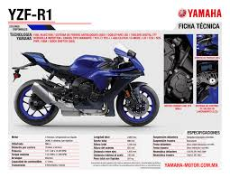

YAMAHA YZF-R1
La Yamaha YZF-R1 es una moto deportiva icónica conocida por su rendimiento excepcional y su avanzada tecnología. Equipado con un motor de cuatro cilindros en línea de 998 cc, la R1 ofrece una experiencia de conducción emocionante con una potencia impresionante y una maniobrabilidad ágil.
1. Historia y Evolución
La Yamaha YZF-R1, comúnmente conocida como R1, hizo su debut en 1998 y rápidamente se estableció como una de las motocicletas deportivas más icónicas del mercado. Desde su lanzamiento, la R1 ha pasado por varias generaciones, cada una mejorando aspectos técnicos y estéticos para mantenerse a la vanguardia de las motocicletas de alto rendimiento.

- 1998-1999: Primera generación, conocida por su revolucionario diseño compacto y su motor de 998 cc.
- 2000-2001: Segunda generación, con mejoras en la suspensión y la reducción de peso.
- 2002-2003: Tercera generación, introducción de inyección electrónica de combustible.
- 2004-2006: Cuarta generación, aumento de potencia y la introducción de frenos de disco radiales.
- 2007-2008: Quinta generación, con un chasis más ligero y un motor revisado.
- 2009-2014: Sexta generación, adopción de un motor con cigüeñal crossplane.
- 2015-presente: Generaciones recientes, con electrónica avanzada y mejoras aerodinámicas.
2. Especificaciones Técnicas
La Yamaha YZF-R1 está equipada con tecnología de vanguardia para ofrecer un rendimiento excepcional. A continuación, se presentan las especificaciones técnicas más recientes de la R1:
- Motor: 998 cc, cuatro cilindros en línea, DOHC, 16 válvulas, refrigerado por líquido.
- Potencia: Aproximadamente 200 CV a 13,500 RPM.
- Par Máximo: 112.4 Nm a 11,500 RPM.
- Transmisión: Caja de cambios de 6 velocidades.
- Chasis: Deltabox de aluminio.
- Suspensión Delantera: Horquilla telescópica invertida, totalmente ajustable.
- Suspensión Trasera: Basculante con amortiguador, totalmente ajustable.
- Frenos: Discos dobles delanteros de 320 mm con pinzas de 4 pistones y un disco trasero de 220 mm.
- Peso: Aproximadamente 200 kg en orden de marcha.